AI · HCAI coursework · 2025
Whispers of Dreams: An AI That Listens, Understands, and Visualizes Your Inner World
A three-phase AI companion that helps people move from emotional conversation to dream interpretation and personalized visual storytelling.
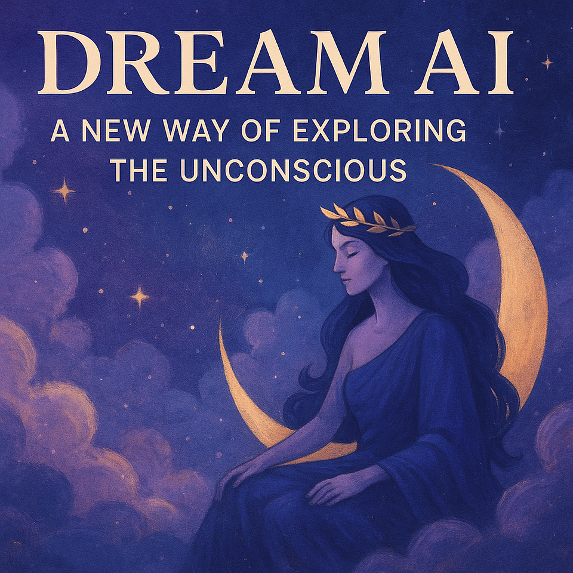
Role
Concept development · interaction and prompt design
Context
HCAI & AR coursework
System
GPT-4 · RAG / FAISS · DALL·E 3
Supervisor
Status
Course project · exploratory prototype
01Overview
Dreams can feel vivid, symbolic, and emotionally important, yet they often disappear before there is a comfortable place to talk about them. This human-centred AI project explores whether an AI companion can help people stay with that inner world through listening, gentle interpretation, and visual expression.
The experience is deliberately not framed as a diagnostic tool. It offers a reflective conversation, makes room for uncertainty, and turns a user’s dream into a visual artefact they can revisit. The aim is emotional resonance and self-articulation, not a scientifically correct answer.
Technical context. When this project began, retrieval-augmented generation (RAG) was still an emerging approach rather than a widely adopted pattern. Building a FAISS-backed retrieval layer was therefore also a technical experiment: an exploration of how external knowledge could ground a sensitive, open-ended conversation without turning interpretation into a fixed answer.
02User insight
We interviewed 20 students and young adults about dream sharing, AI companionship, and the appeal of visualising dreams. The conversations suggested a tension: dreams were widely understood as personal and symbolic, but many participants felt uncomfortable sharing them with other people.
Participants were more open to an AI conversation than a face-to-face one, while also asking for an experience that felt less robotic and more emotionally aware. The strongest shared interest was visualisation: people wanted to see their dream translated into an image.
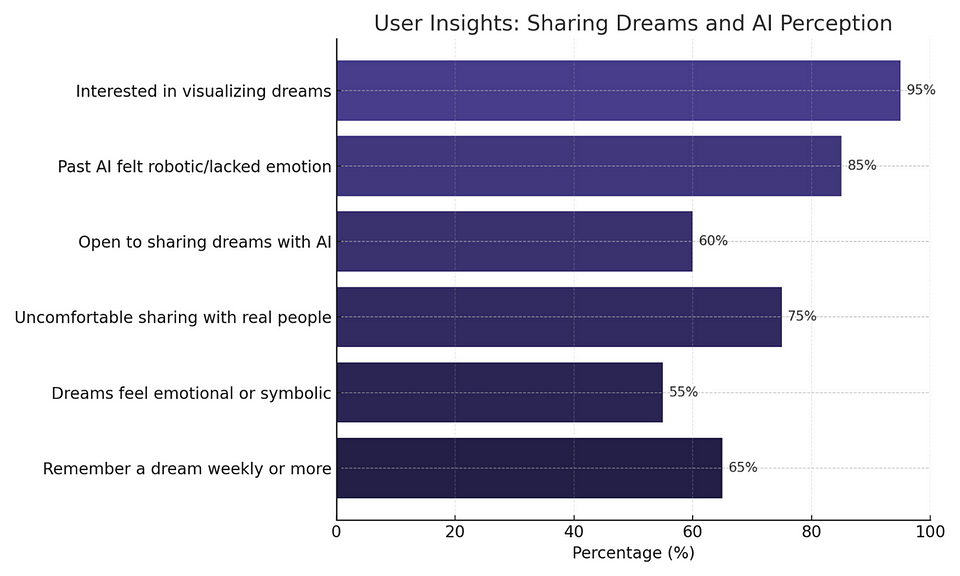
03Three-phase experience
The concept guides the user through three connected phases. Emotional context is gathered before dream interpretation, and the resulting imagery is generated only after the user has described the dream in their own words.
This sequence keeps the system grounded in the user’s lived context while giving them a visible way to move forward, go back, or add detail.
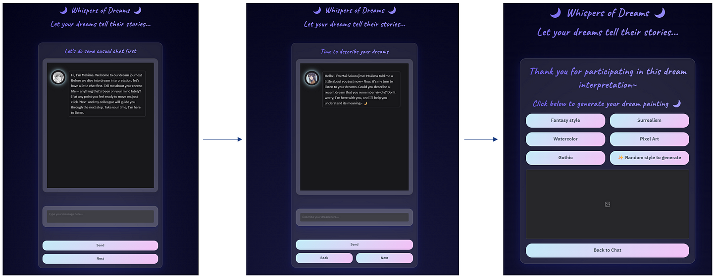
04Emotional conversation
In the first phase, Makima welcomes the user and asks about recent life experiences, emotional stress, personal struggles, or anything that has been on their mind. Her job is not to analyse or fix the user. She holds space and builds an emotional memory for the next phase.
The tone is intentionally warm, slow, and lightly poetic. Questions such as “What’s been weighing on your heart lately?” open a window into waking life without forcing the user toward a conclusion.
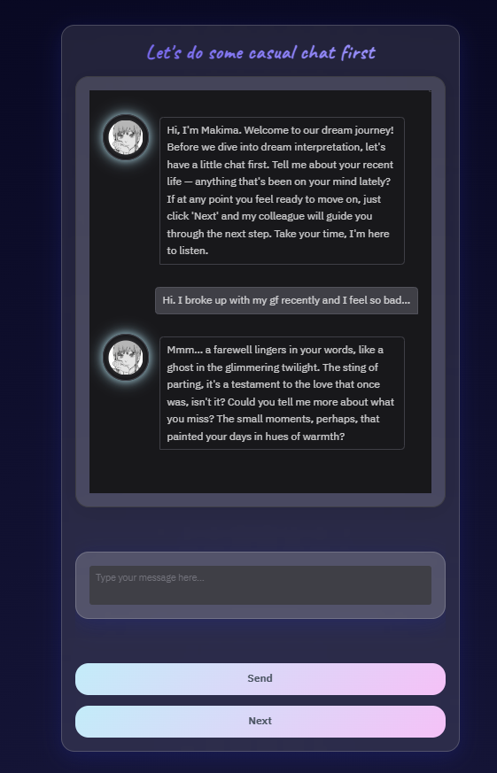
05Dream interpretation
In the second phase, the conversation shifts to Mai Sakurajima, a poetic and emotionally perceptive dream interpreter. Mai draws on both the dream description and the emotional context gathered earlier, connecting symbols to the user’s recent experiences without claiming that one meaning is definitive.
When a dream is too short or vague, the system does not invent an explanation. It asks for more detail: what the user saw, who was there, where the dream took place, and how it felt.
- Limited response length. Interpretations stay to around two short paragraphs so the user can respond rather than being buried under an essay.
- Context-aware reflection. Retrieved material is combined with the emotional thread of the earlier conversation.
- Permission to disagree. The output is framed as a possible reading, not a verdict about the user.
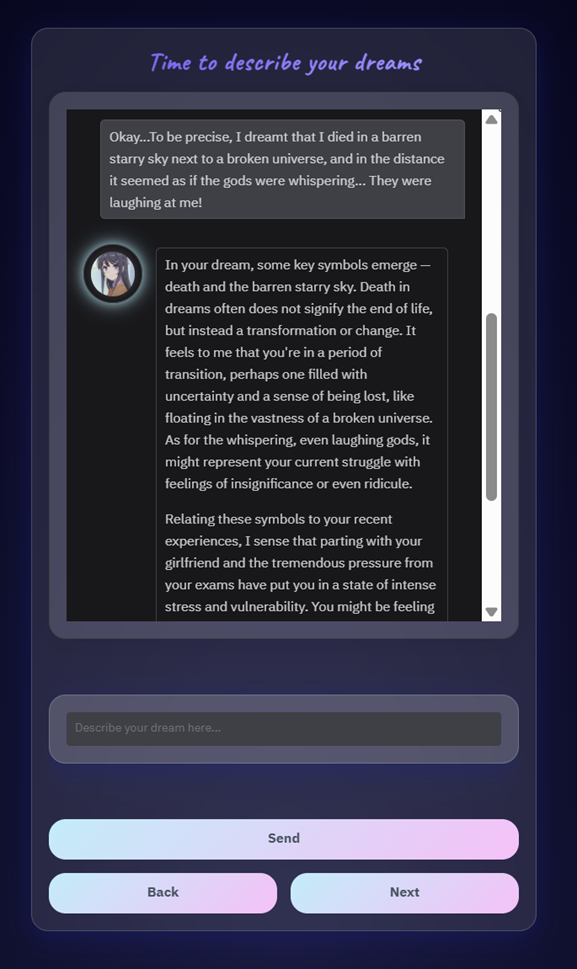
06Dream art generator
Once the dream has been described, the final phase translates its themes, mood, and symbolic details into an image using OpenAI’s DALL·E 3 model. The system first turns the user’s words into a more deliberate visual prompt, then lets the user choose from styles such as fantasy, surrealism, watercolor, pixel art, gothic, or a randomised option.
The generated image is not presented as the dream’s objective representation. It is a visual mirror: one possible artefact that can help the user revisit or hold onto a fleeting experience.
A glowing, dreamlike city made entirely of reflective glass towers under a violet sky, with a small figure walking alone.
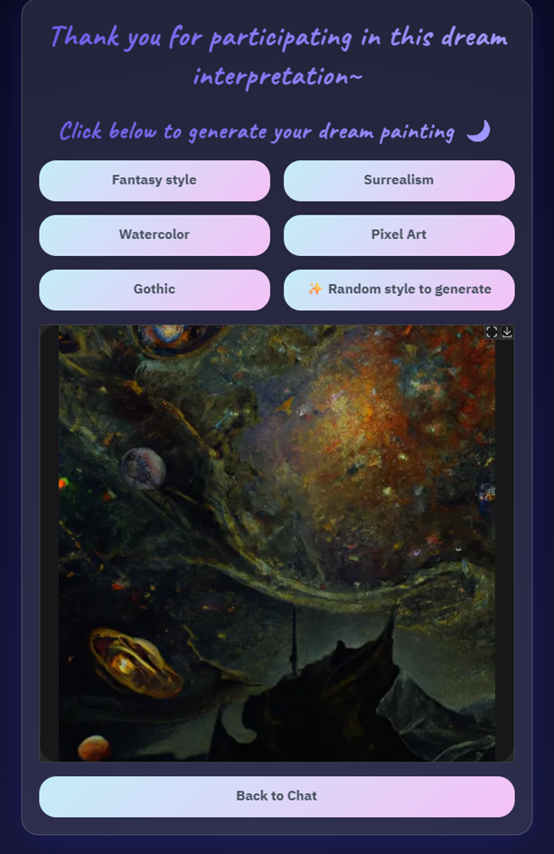
07System details
The implementation combines prompt engineering with retrieval-augmented generation. Mai uses a FAISS vector database built from classic dream theories, modern psychology literature, and folk or symbolic references. Incoming dream descriptions are semantically chunked to improve matching against that reference set.
A similarity threshold determines when retrieval is meaningful enough to support an interpretation. If the threshold is not met, Mai asks the user to describe more rather than producing unsupported meaning. A style-conditioned prompt engine then prepares the visual request for DALL·E 3.
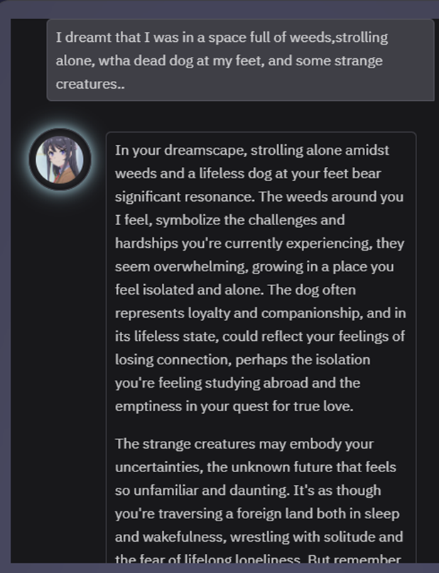
08Reflection
The project’s central design question is not “Can AI decode dreams?” but “Can AI help someone reflect on a dream without taking ownership of its meaning?” That distinction makes uncertainty, tone, and user control part of the system design rather than afterthoughts.
All conversations and generated images are treated as ephemeral. The experience aims to be private and intimate, while remaining honest about its limits: it can offer comfort, associations, and a prompt for reflection, but it cannot provide scientifically precise explanations or replace professional support.
09Tech Stack
Conversation
GPT-4, persona prompting, emotional context, and guided user input
Retrieval
FAISS vector database, semantic chunking, and a similarity threshold for grounded interpretation
Visual generation
OpenAI DALL·E 3 with style-conditioned prompt generation
Design focus
Human–AI interaction, emotional awareness, uncertainty communication, and ephemeral data handling
Visual materials
10
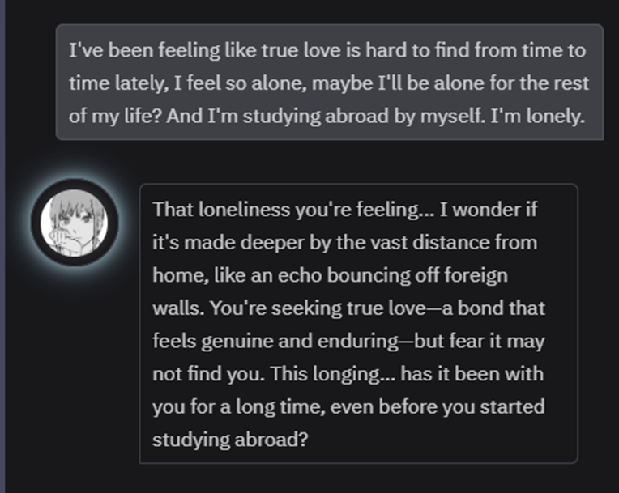
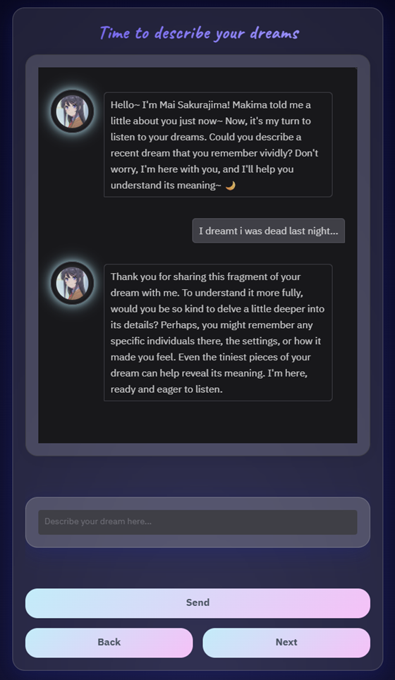
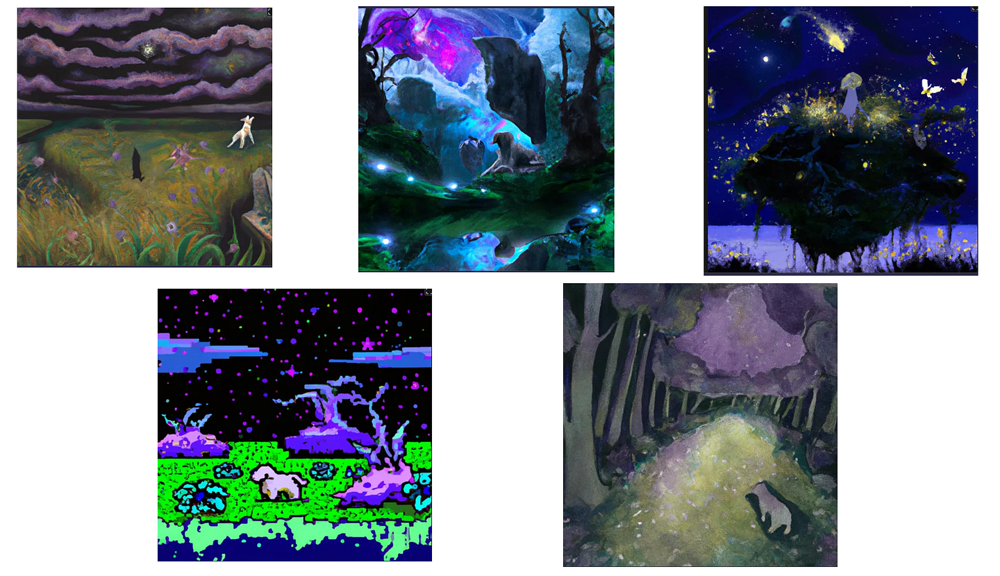
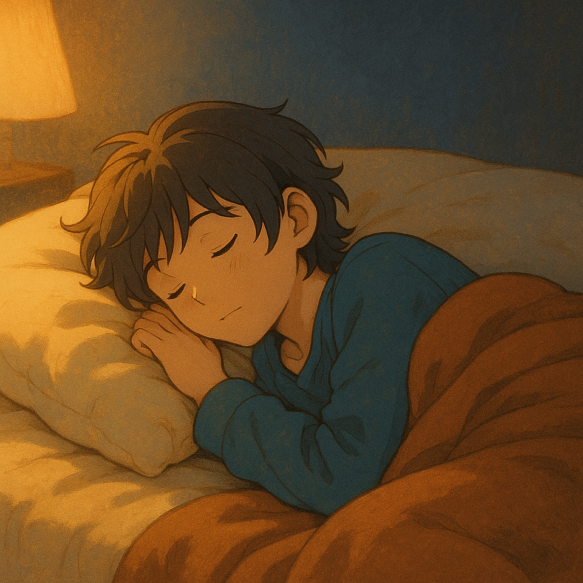